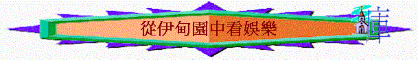

最近看了一段令人感嘆的新聞：「土瓜灣一名疑有情緒問題的15歲中二男生，原為精英班學生，因沉迷打機成績一落千丈，即使在考試前夕，前日起仍連續打機近24小時，母親昨凌晨返家見兒子仍在打機，責備之餘索性強行關電腦，兒子即時情緒失控，盛怒下揑傷母親手臂，母無奈報警。」[1] 一名精英班學生因為沉迷打機，而影響自己學業，影響自己情緒，影響了與家人關係；作為屬神的兒女，我們也要小心，娛樂本身原本是一件美好的事，但若運用得不好，也會影響信徒的身心靈！
一.娛樂的目的──令人舒泰及快樂的
「耶和華 神在東方的伊甸立了一個園子，把所造的人安置在那裏。耶和華 神使各樣的樹從地裏長出來，可以悅人的眼目，其上的果子好作食物。園子當中又有生命樹和分別善惡的樹。」創2:8-9
「神賜福給第七日，定為聖日；因為在這日， 神歇了他一切創造的工，就安息了。」創2:3
「我知道世人，莫強如終身喜樂行善；並且人人吃喝，在他一切勞碌中享福，這也是 神的恩賜。」傳3:12-13
神當初為亞當及夏娃預備了一個園子，名為伊甸，伊甸的意思就是快樂，神在起初也為人預備快樂的場景，人在伊甸中是有工作的──要看守及修理園子，但在第七日給人可以休息及舒暢，也給亞當及夏娃有悅人眼目的的樹木、美味的果子，當然園中的動物也可成為他的快樂，所以望園中樹木、吃佳美果子、享受安息日、與動物為伴，與愛人一起就是他們的娛樂了。因此我們從起初看到娛樂的目的是令人在工作過後可有舒泰及快樂。
有一次，有一位神的僕人正在逗玩一群鴿子。它們環繞他飛翔，棲止在他肩上，停留在他手上。神僕和它們親密，如同人和朋友一樣。恰巧過來一個獵人，以為神僕在作玩物喪志的戲娛，大表驚訝。神僕指著獵人手中的弓，問他緣何把弦放鬆弄弛了。獵人說，若是張而不弛，便會喪失彈力。神僕笑道：『若是無知的角木尚須有時鬆弛，藉以恢復其彈力；那麼基督的僕役，徵求工作效果日著，不當更有休娛的時間麼。』[2] 的確，我們的身體也需要鬆弛的，若信徒只單顧工作及事奉，或長期活在疲憊及緊張的環境，是不合宜的，筆者作為牧者在事奉上有時也會感到疲累及有壓力，感謝神，也給自己有娛樂的時間，我的娛樂是攝影及觀看大自然，在星期一放假中，能看到及影到大自然美麗的圖畫，就令我感到很快樂及舒暢的。
二.健康的娛樂
基督徒也可以建立健康的娛樂生活的，可根據起初創世記神設立伊甸的安排作為參考：
1.吃佳美食物---在工作過後，好好享受神賜的美食，不是單為填飽肚腹，也是存感恩快樂的心享用食物，這也是神賜的福氣
2.望天然美景---不要單停留注視自己的平版電腦、手中手機、電視螢幕，也可以留意神所創造悅人眼目的大自然，一樹一草，一花一鳥也有其獨特美麗的地方，創造主已在起初設立最美麗、最廣闊、最天然、最高清、最3D的圖像，也是免費的，我們不要浪費不去欣賞！
3.伴親友良朋---聖經說那人獨居不好，所以神賜人有同伴及親友；但現代人喜歡一起用膳時，即垂低頭，不斷玩弄手機，似乎忽略了身邊的人與事。我們嘗試多抬頭與旁邊的人交流，好好享受與朋友及家人相聚一同用膳、一同交談、一同玩樂的時刻，這也是美好的娛樂。
當然每個人的玩樂方式也是不同的，但原則也是一樣：在神所賜的福份中（人／物），得著舒泰及快樂，若我們的娛樂方式不能做到以上目的，則我們要留心，早前有一名女子連續五天熬夜看了七十二小時電視劇集，加上愛上網玩遊戲，右眼近視從原本的七百度，暴增至一千三百度，視野變得霧濛濛[3]。所以若我們喜愛一些玩樂，令我們身體會更疲累不能有舒泰，更影響我們的健康，我們要減少及要停止這些活動。
三.注意的事項
另一方面，我們在享樂的時候，也要留意以下幾件事情：
1.要愛惜光陰
「要愛惜光陰，因為現今的世代邪惡。」弗5:16
在2010年某機構曾向1110位在學青少年作問卷調查，發現有四成受訪年輕人坦言過著「HEA」的生活；有7.3%人每天花逾六小時以上瀏覽Facebook、聊天室、逛街、講電話及發呆，卻竟有六成四人「不在乎世俗的目光」，覺得自己被指「HEA」也無所謂，僅兩成多人會不喜歡[4]。基督徒的人生卻不是「HEA」的人生，愛惜有贖回的意思，從前我們在未信時，已浪費了很多光陰，我們信主後，要贖回，珍惜神給我們每一天的時間。
亞當及夏娃在伊甸園中是有娛樂的，但他們不是每天單看悅人眼目的樹，他們也有他們的工作──為伊甸園的動物改名，看守及修理園子，他們不能虛度光陰的，我們基督徒也是一樣的，在世我們也有工作與使命的，若我們的玩樂佔用了我們太多時間，令我們不能有效完成在世的工作與使命時，我們要小心！曾聽一講員分享他守望的事：他知道有些肢體在工作時，會上網作公司以外的事情，可能是上FACEBOOK，可能是瀏覽網上自己愛好的事，但若他長期也是如此的，他則顯為不忠誠，也浪費了他應有的工作時間。
另外，之前題及那青年人，他連續打機近24小時，虛度了他應該要讀書及休息的時間，今天我們又如何呢？有沒有一些玩樂是用了太多的時間呢？在教會中，有一些肢體很喜歡看電視的足球節目，但若那場賽事是在星期六深夜時，他們會選擇不看或錄影的，因為他們想有更多時間可以休息，預備最佳的身體情況，在主日中敬拜神！弟兄姊妹，我們也需要的，我們可以有自己的娛樂時間，但要節制，要愛惜光陰！
2.要謹守底線
「耶和華 神吩咐他說：「園中各樣樹上的果子，你可以隨意吃，只是分別善惡樹上的果子，你不可吃，因為你吃的日子必定死！」創2:16-17
「少年人哪，你在幼年時當快樂。在幼年的日子，使你的心歡暢，行你心所願行的，看你眼所愛看的；卻要知道，為這一切的事， 神必審問你。
所以，你當從心中除掉愁煩，從肉體克去邪惡；因為一生的開端和幼年之時，都是虛空的。」傳11:9-10
神是給亞當與夏娃有美食享受，但祂給了他們有一界線──園中各樣樹上的果子，他們可以隨意吃，只是分別善惡樹上的果子，他們不可吃；我們也可以有自由行心所願行的，看眼所愛看的，但我們要留心，在玩樂中仍要有底線，不能越過，因神是知道的，在將來祂必審問我們所行所看的事。
所以我們可以有享樂但卻不要放縱私慾，當初人在伊甸園中，人也有正常的慾念，人從看園中的樹可滿足眼目的慾望，人從吃園中的佳果也滿足了肉體的需要，人也從為動物改名及修理園子可有今生的成就，但人的心卻不滿足，當蛇用眼目的情慾、肉體的情慾與今生的驕傲引誘夏娃吃分別善惡樹上的果子時，他們就越了神的吩咐，吃了禁果，這是人類第一次放縱自己的私慾！現今的世代仍延續了他們的放縱，在2011年一份調查顯示，有11%被訪青少年出現網癮傾向，而青少年上網多會瀏覽社交網站（82.4%）、瀏覽網頁（73.2%）、使用即時溝通工具（72.6%）、網上游戲（45.5%）；也有人承認會瀏覽色情網站（9.5
%）、參與網上賭博（6%）、網絡性愛活動（2.7%）[5]。原來很多人活在沉溺的玩樂中！我們屬神的人卻不可！要常有知足的心，神已將天地萬物給我們可享受及管理，不要越過祂的界線，不要看神不喜愛我們的東西，不要行神不喜悅我們的行為，若今天我們在玩樂中，有放縱私慾的時候，求神憐憫，也使我們重新回轉，立志過一個謹守的生活。
另外我們可以有娛樂但卻不要犯罪，在伊甸園中，其實只有一條誡命──就是不吃分別善惡樹上的果子，但他們卻犯了，失去了原本在園子的快樂，一生再不能入回伊甸中。我們也要儆醒，不要效法這世界，在上文的不少受訪者更表示，曾使用互聯網進行不良行為，包括非法下載（50.4%）、網上欺凌（7.9%）及「援交」（1.2%）等，也有青少年為了上網逃學（8.9%），而因長期受色情、賭博等不良資訊的浸淫，參與非法行為如偷竊（6.6%）及濫用毒品（5%）等。他們在玩樂中行不法的事，我們卻不可，若那樣嗜好或行為是不合真理的，我們要立志不再行。曾有一位弟兄，他喜歡賭博，信主後，仍未戒掉，但聖靈提醒他，他所行的是神不喜悅，最後，他積極尋求牧者及一些戒賭小組的幫助，他也建立每天親近神的習慣，嘗試努力靠主除掉惡習。不知我們今天又有沒有一些惡習呢？聖經說神必審問我們，我們當從肉體克去邪惡！
3.以愛神為先
「我只怕你們的心或偏於邪，失去那向基督所存純一清潔的心，就像蛇用詭詐誘惑了夏娃一樣。」林後 11:3
「不要愛世界和世界上的事。人若愛世界，愛父的心就不在他裏面了。因為，凡世界上的事，就像肉體的情慾、眼目的情慾，並今生的驕傲，都不是從父來的，乃是從世界來的。」約壹2:15-16
我們相信當初亞當與夏娃是愛神的，但因一時的私慾，他們的心偏於邪，失去對神純一的心。今天我們也要小心，很多玩樂是中性的，似乎也對我們的身體及心理有益處的，但人若太愛這些事，可能有一天愛父的心就不在他裏面了。有一位弟兄，他在祈禱中經歷了神的幫助，他立志要更愛神及投入聚會，但他同時很喜歡「追星」，他會很投入參與一些歌迷會活動，至終他已不在教會聚會了。的確，人若愛世界，愛父的心就不在他裏面，在今天我們也有很多喜好與娛樂活動，但我們要留心，這些事會否影響我愛主的心，令我們更少想起主，令我們更少愛慕祂的話？在末世中，有人愛筵樂不愛神，我們不要效法他們，我們要持守愛主的心，神是我們人生最愛的對象，沒有任何娛樂、任何人物可以與祂相比！
我們感謝神！因神在我們生命中已賜下很多令我們快樂的事與物，但我們要知足，不要在神的恩典下過放縱的生活，要愛惜光陰，在真理的界線裡，我們可以安然享受神的美物，過一個身心靈健康的人生。
[1] 明報2013年1月25日新聞
[2] http://www.ccbiblestudy.org
[3] http://www.appledaily.com.tw
[4] 東方日報2010年7月5日新聞
[5] http://www.jgospel.net